第三部技術夾層 ｜ 舊物理公式的約化推導閉包
如果只把牛頓、電磁、量子與相對論重新命名為物性語言，這還不夠硬。真正能面對挑戰的新範式，必須把舊公式如何從更底層的狀態、刻度、守恆核與作用量中降維顯化，逐步推給讀者看。
因此，本夾層放在第三部之後、第四部之前。第三部已經完成「歸根」：告訴我們舊物理不是廢墟，而是母結構在特定 Ω 刻度下留下的穩定投影。這一節再往前走一步：把可以推導的推導乾淨，把還不能宣稱終局閉合的地方明確標成邊界。
不需要數學細節的讀者，可以把本夾層當成硬核附錄略讀；需要檢查理論骨架的讀者，請從這裡開始審問《物性論》是否真的敢把自己交給公式。
一、推導閉包的四個等級
本書採用四級閉包，避免把讀者入口、條件約化、標準推導與終局證明混成一團。
• D0 語義歸根：能解釋公式在物性論中的角色，可以作為讀者入口。
• D1 條件約化：在給定 Q、Ω、Π、Δσ 條件下，可以推出標準形式。
• D2 標準變分推導：從明確作用量或哈密頓量推出方程，可以說推導乾淨。
• D3 母方程終局推出：從唯一物性母方程推出數值常數、完整粒子譜與全部邊界；本書目前不宣稱完成。
所以，所謂「推乾淨」，不是把所有未解題硬寫成已解，而是每一條公式都按同一條路徑過關：
母結構假設 → Ω 刻度與 Q 守恆 → 有效作用量 / 哈密頓量 → 變分或極值條件 → 標準公式 → 成立窗口 → 未閉合邊界
二、從物性穩定包推出 F = ma
1. 宏觀約化
設一個物體不是孤立磚塊，而是背景海中的局域穩定包。它在宏觀刻度 Ω 下有可記錄中心：
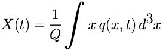
其中 q(x,t) 是該穩定包的守恆密度，Q = ∫ q(x,t)d³x 是 Q 核守恆量。當 Q 核守恆、低速、內部形變可忽略時，複雜物性狀態可以約化成一個宏觀自由度 X(t)。
2. 有效作用量
在低速、宏觀、方向無偏的條件下，中心運動的最低階有效拉格朗日量只能寫成：
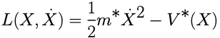
為了讓推導更乾淨，下文記 m* 表示有效質量，V* 表示有效勢函數；星號只表示「有效量」，不是新的假設。
3. 變分
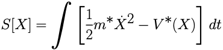
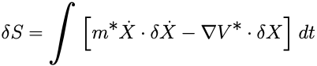
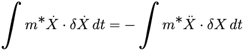
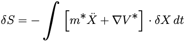
對任意 δX 成立，得到：
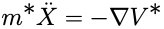
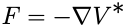
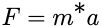
這就是 F = ma。若有效質量隨時間變化，更一般的形式是 F = d(m* v) / dt；只有當 m* 近似恆定時，才退化為 F = ma。
三、從關係勢場推出牛頓反平方律
在宏觀弱場刻度下，兩個穩定包之間的長程關係腔可壓縮為標量勢 Φ(x)。質量密度 ρ(x) 是 Q 核存在成本在宏觀刻度下的密度投影。
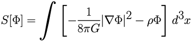
對 Φ 變分：
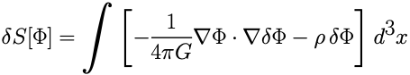
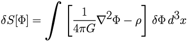
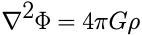
對點質量 M，ρ(x)=Mδ³(x)。利用三維格林函數 ∇²(1/r)=−4πδ³(x)，得到：
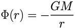
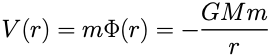
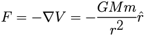
這就是牛頓萬有引力反平方律。它在三維、靜態、弱場、長程關係腔可標量化的宏觀 Ω 刻度下成立；它沒有推出 G 的數值，也沒有完成強場或量子引力。
四、從局域狀態接力推出波動方程與 c 的角色
前文說過，光不是小球快遞，而是狀態接力。離散形式可以寫成：
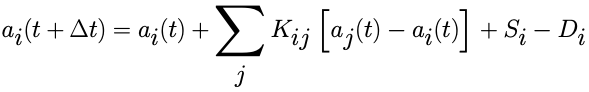
只保留一階時間變化時，連續極限給出擴散/耗散型方程：
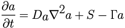
但光速傳播不是普通擴散。要得到可逆波動，關係腔必須保留二階時間結構：
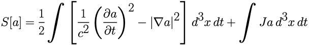
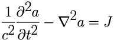
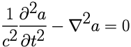
代入平面波 a=a0 exp[i(k·x-ωt)]，得到：
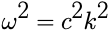
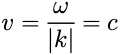
因此，c 是關係腔中可逆局域擾動的最大轉譯速率，是因果接力的硬邊界；本書不把它的實驗數值偽裝成母方程終局推出。
五、從關係腔連接推出 Maxwell 方程
把電磁場理解為關係腔中的 U(1) 連接。定義四維勢與場強張量：
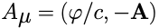
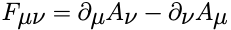
取規範不變作用量：
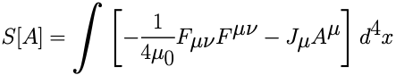
對四維勢變分並分部積分，得到：
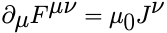
這對應 Maxwell 的非齊次方程：
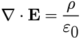
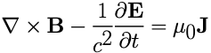
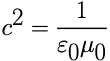
由於 F=dA，自動滿足 Bianchi 恆等式：
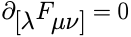
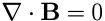
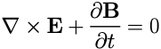
這完成了「關係腔連接 → 規範場 → Maxwell 方程」的 D2 推導；但尚未從唯一母方程推出 U(1) 的終局來源與 e、ε0、μ0 的全部數值。
六、從作用量相位推出 Schrödinger 方程
量子態不是神秘雲霧，而是狀態幅度與作用量相位的合成：
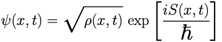
在固定 Q 核、低速、外勢 V(x) 下，取非相對論哈密頓量：
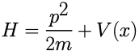
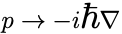
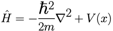
取復場作用量：
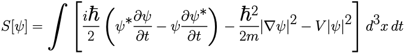
對 ψ* 變分，得到：
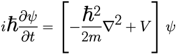
這就是 Schrödinger 方程。這一推導說明 ψ 是潛態在 Ω_quantum 下的相位-密度賬本；它沒有終局解決測量問題，也沒有推出 ℏ 的數值。
七、從相對論能量殼推出 Dirac 方程
相對論穩定包滿足：
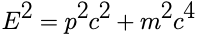
若要求一階時間、一階空間的局域演化，需寫成：
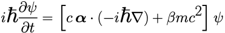
要求哈密頓量平方回到相對論能量殼：
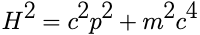
矩陣必須滿足：
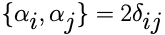
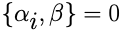
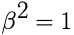
引入 gamma 矩陣後，得到協變形式：
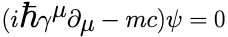
這就是 Dirac 方程。它說明相對論 Q 核不能再被壓成單一標量，必須展開為旋量結構。它沒有推出所有費米子代際質量，也沒有推出完整標準模型表示。
八、從幾何關係腔推出 Einstein 場方程與牛頓弱場
在大尺度強關係腔中，背景不再只是舞台，而是參與結算的幾何對象。用度規表示宏觀關係腔，取 Einstein-Hilbert 作用量加物質作用量：
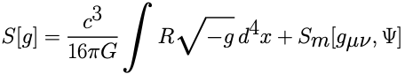
對度規變分，幾何項給出：
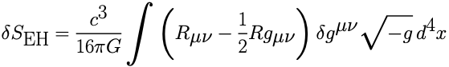
物質項定義應力能量張量。若 x0=ct，可寫成：
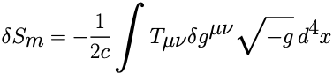
令總變分為零，得到：
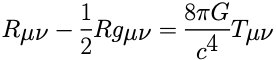
這就是 Einstein 場方程。弱場、低速、靜態條件下：
於是回收牛頓弱場。這一推導完成幾何作用量到場方程的 D2 閉包，但沒有完成量子引力，也沒有證明 Einstein-Hilbert 形式是唯一可能的終局母作用量。
九、從相對論作用量推出 E = mc²
對自由穩定包，取相對論不變作用量：
動量與能量為：
當 v=0：
因此，質量不是死標籤，而是穩定包維持 Q 核的存在成本；c² 是該存在成本與能量賬本之間的兌換倍率。
十、四個基本常數的可推導層級
c
• 已推乾淨：c 是局域可逆擾動的最大傳播速度，是 Lorentz 結構中的因果錐邊界，也是 Maxwell 約化中的電磁波速度。
• 未閉合：尚未從唯一物性母方程推出 c 的無量綱數值。
ℏ
• 已推乾淨：ℏ 是作用量 S 到相位 exp(iS/ℏ) 的兌換刻度，控制 Schrödinger/Dirac 方程中的相位演化與動量算符。
• 未閉合：尚未從 Book1 母結構推出 ℏ 的實驗數值。
G
• 已推乾淨：G 是長程關係腔/幾何腔體的耦合強度，出現在 Poisson 方程與 Einstein-Hilbert 作用量中。
• 未閉合：尚未從 Book1 母結構推出 G 的數值，也沒有完成量子引力閉合。
k_B
熱力學中：
所以 k_B 是微觀狀態計數 ln W 與宏觀熱賬 S/T/E 之間的兌換常數。Book1 可以推出它的賬本角色，不能推出其 SI 數值來源。
十一、推導閉包總判決
• F=ma：D2。由穩定包有效作用量變分推出，成立於固定 Q、低速、宏觀、有效質量近似恆定。
• Newton 引力：D2。由靜態關係勢作用量推出 Poisson 方程與反平方律；G 數值未閉合。
• 局域傳播與 c：D1/D2。可推出波方程與 c 的結構角色；數值未由母方程推出。
• Maxwell 方程：D2。由 U(1) 連接與規範作用量推出；U(1) 終局來源與 e、ε0、μ0 數值未推出。
• Schrödinger 方程：D2。由非相對論復場作用量推出；測量問題與 ℏ 數值未閉合。
• Dirac 方程：D2。由相對論能量殼與一階局域演化推出；代際質量譜與完整標準模型表示未閉合。
• Einstein 場方程：D2。由幾何作用量推出並回收牛頓弱場；量子引力與強場終局閉合未完成。
• E=mc²：D2。由相對論自由穩定包作用量推出；依賴 c 作為因果速度邊界。
• 本夾層完成 D1-D2 級推導閉包；仍不能宣稱 D3：全部常數數值、完整粒子質量譜、量子引力與全外部等價尚未完成。
到這裡，第三部真正完成了自己的任務：不是把舊物理燒掉，而是把它們放回母結構，推清楚它們為什麼會在自己的 Ω 窗口內成立；同時也把尚未攻下的城門標在地圖上。下一頁開始，理論不再停留在推導室裡，它要進入第四部的淬火實驗。
讀者評論
閱讀與評論不需要登入。評論送出後會先進入待審狀態，審核通過後公開顯示。